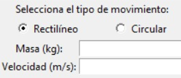
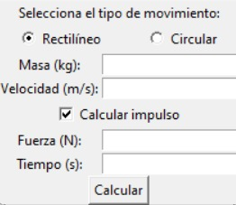
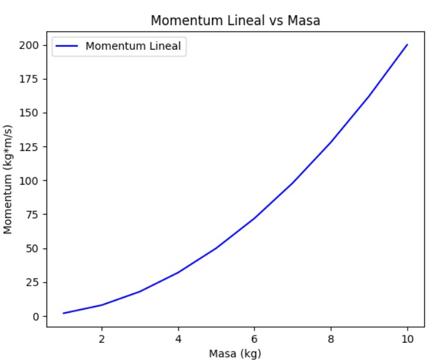
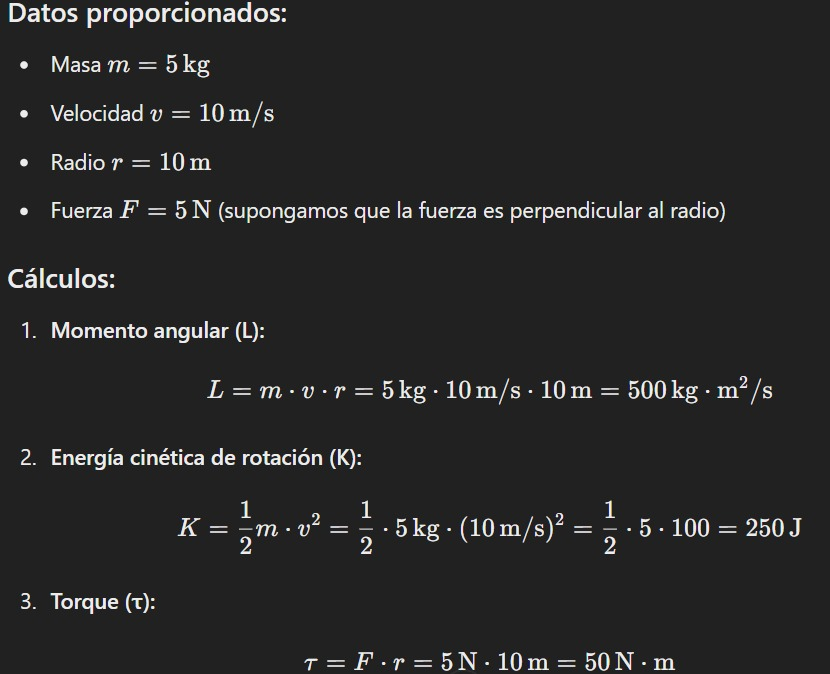
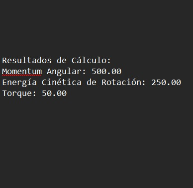

David Vasquez
Brahian Castro
Juan Pablo Prado
Física 1
Omar Enrique Castro Hernandez
Cálculo y análisis de variables mecánicas en movimientos de traslación y rotación
Este proyecto tiene como objetivo desarrollar un software educativo que permita calcular variables clave en movimientos de traslación y rotación, como el momentum y la energía. El software también facilita la comparación de cálculos teóricos con resultados experimentales obtenidos a través del programa Tracker, fomentando el aprendizaje práctico de los principios de la física.
El proyecto incluye varias etapas, desde la implementación de un software de cálculo hasta la validación experimental. Se presenta a continuación el enfoque de cada etapa:
Introduce los datos necesarios, como la masa, velocidad y radio (si es un movimiento circular) en la interfaz.
Selecciona el tipo de movimiento: rectilíneo o circular. Si lo deseas, activa opciones avanzadas como cálculo de torque o impulso.
Observa los resultados teóricos y gráficos generados automáticamente. Guarda los resultados en un archivo si lo necesitas.
En esta sección, se comparan los resultados teóricos obtenidos mediante el software con los datos experimentales recopilados usando Tracker. A continuación, se presentan ambos conjuntos de datos para su análisis.
Los resultados teóricos se calcularon con las fórmulas de momentum, energía cinética y torque , con ayuda de IA para mejorar exactitud.
Los datos experimentales se obtuvieron mediante el análisis con el Tracker.
Este proyecto demostró que el software desarrollado es capaz de calcular con precisión las variables mecánicas de movimientos de traslación y rotación. La comparación entre los resultados teóricos y experimentales destacó pequeñas discrepancias atribuibles a factores experimentales, lo que valida el potencial educativo del software como herramienta de aprendizaje.